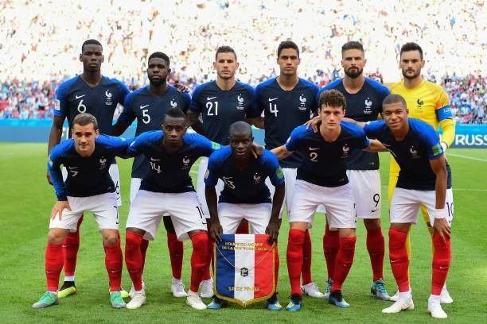
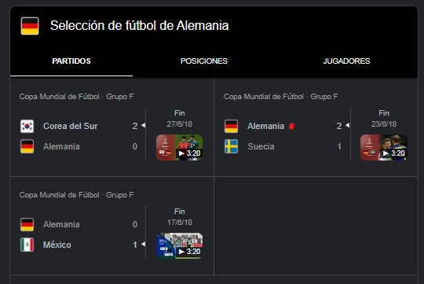
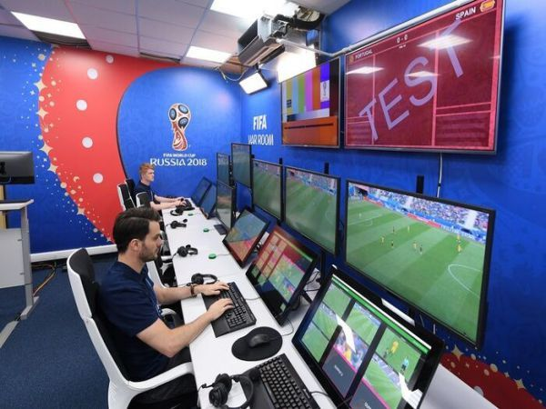
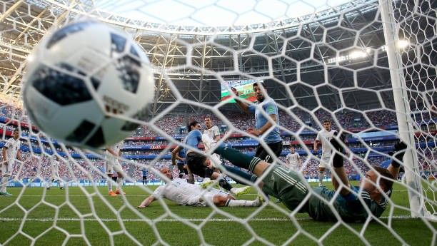
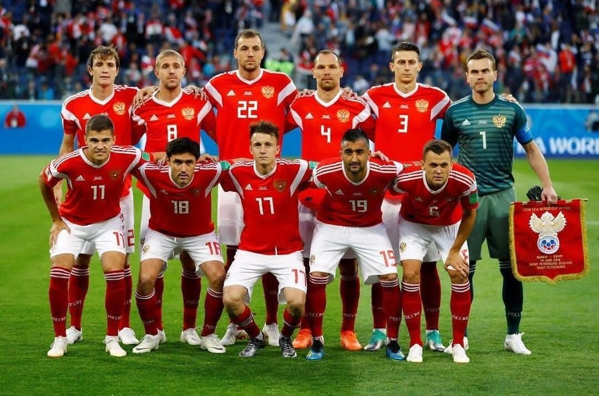

Estos son datos curiosos del mundial 2018 un mundial lleno de datos interesantes que cualquier aficionado al futbol le puede interesar datos que te impresionaran y que no te imaginabas a continuacion los datos curiosos del mundial rusia 2018
la seleccion francesa tuvo a sus jugadores mas jovenes en el mundial 2018 tenia n promedio de edad bajo comparando con otras selecciones,pero eso les jugo a su favor.Eran rapidos,intensos y con muchas ganas de gloria.Jugadores como Kylian Mbappé,Antoine Griezmann y Paul Pogba mezclaban juventud con talento brutal.no eran el equipo mas experimentado ni visto por los demas,pero si el mas efectivo

la seleccion alemana llego como campeona del 2014,pero jugo fatal.Perdieron contra mexico y corea del sur lo mas impactante fue que quedaron ultimos en su grupo.Fue una decepcion para los aficionados alemanes y fue una de las sorpresas del torneo del campeon defensor

El videoarbitraje hizo su debut oficial en un mundial y fue protagonista total.Se uso para validar goles,marcar penales y anular jugadas polemicas.Aunque ayudo a hacer el juego mas justo,tambien rompia el ritmo y generaba discusiones entre los fans

Con 169 goles, fue uno de los mundiales más ofensivos. Se marcaron muchos goles de pelota parada (tiros libres, penales, corners), en parte gracias al VAR que detectaba faltas que antes nadie veía.

La Selección de Rusia no tenía mucha fe del público, pero llegó a cuartos. Eliminó a España en penales, y el país entero explotó de emoción. Fue como si hubieran ganado el mundial para ellos.
